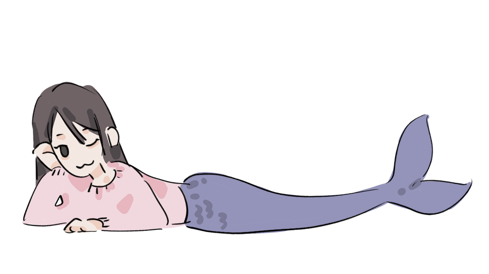
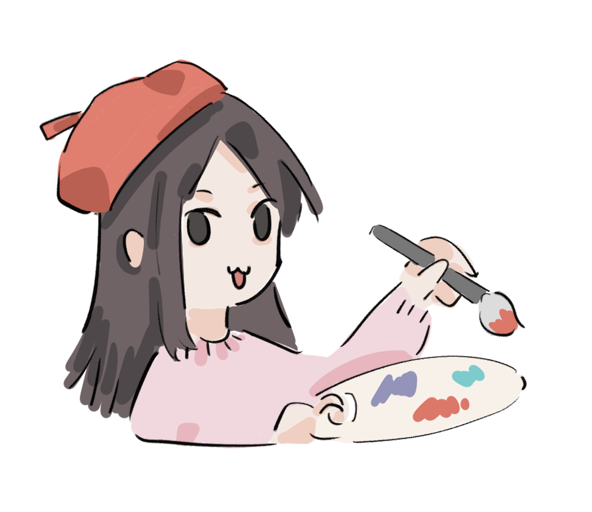
HERE IS MY PORTFOLIO 🎨
Let’s start with two characters I designed for my indie game, Lucky Bunny’s Foot.
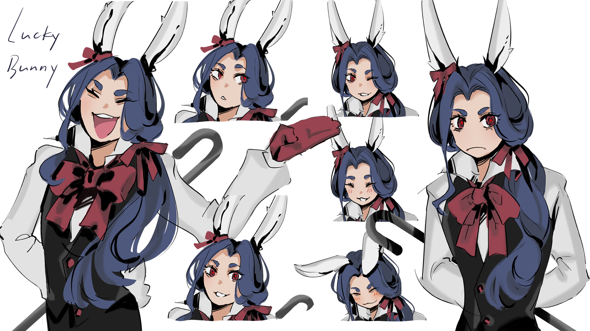
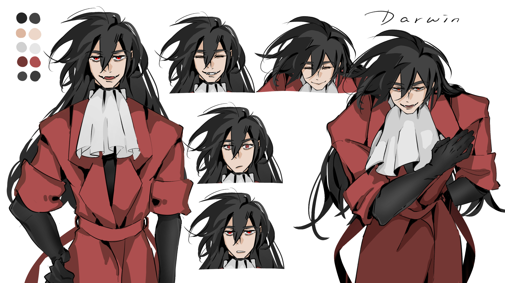
And here are some of my practices.
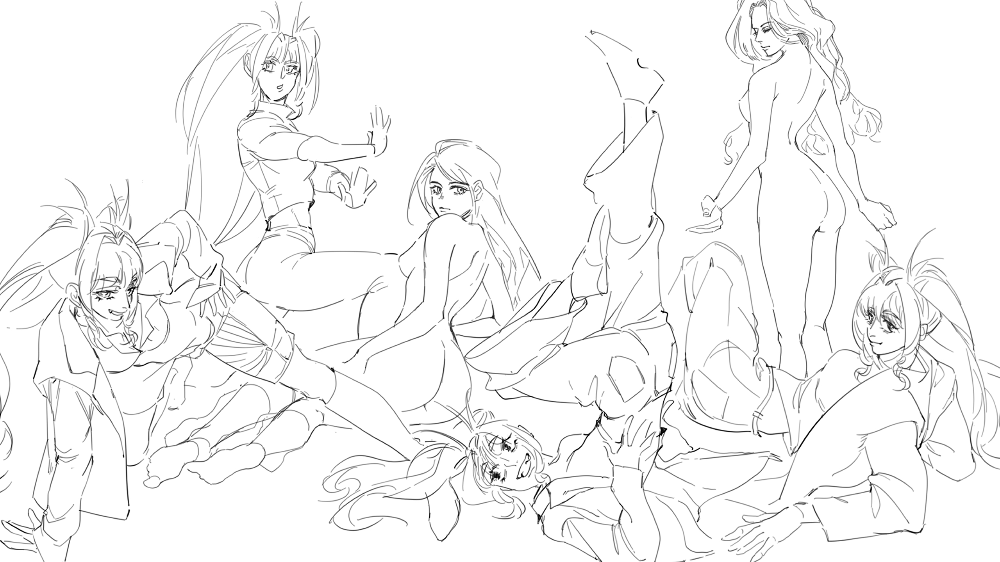
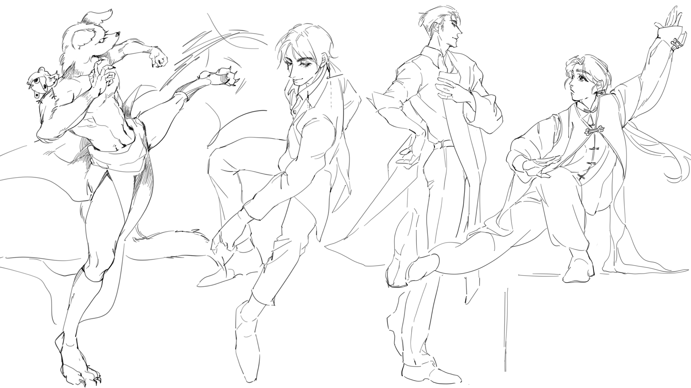
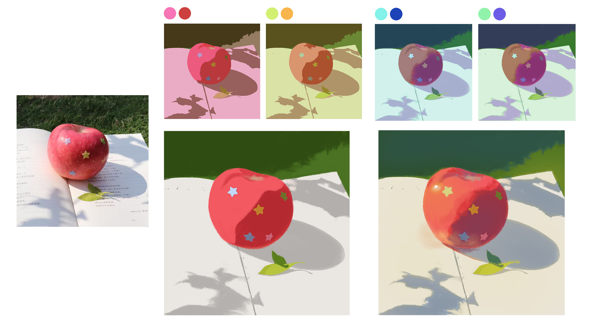
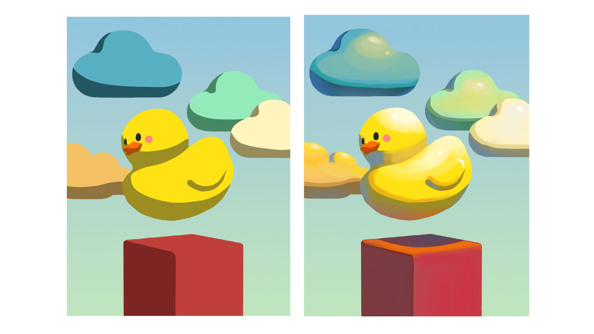
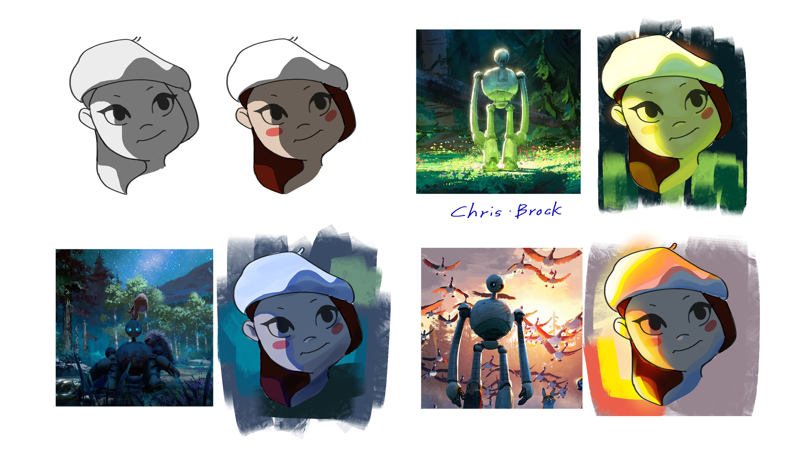
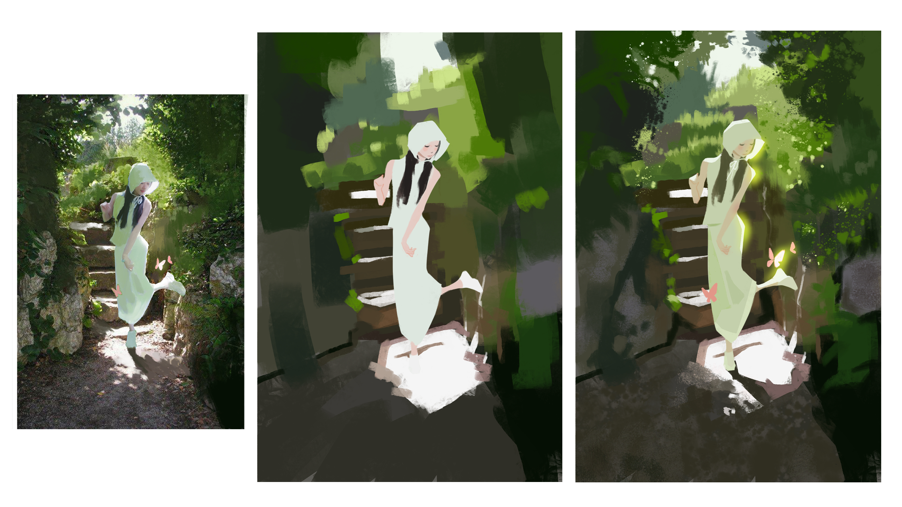
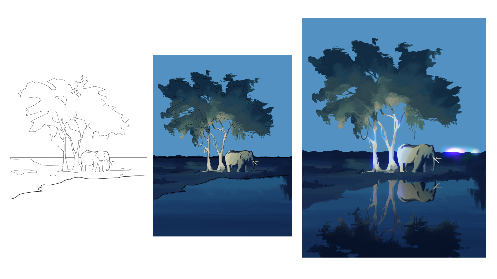
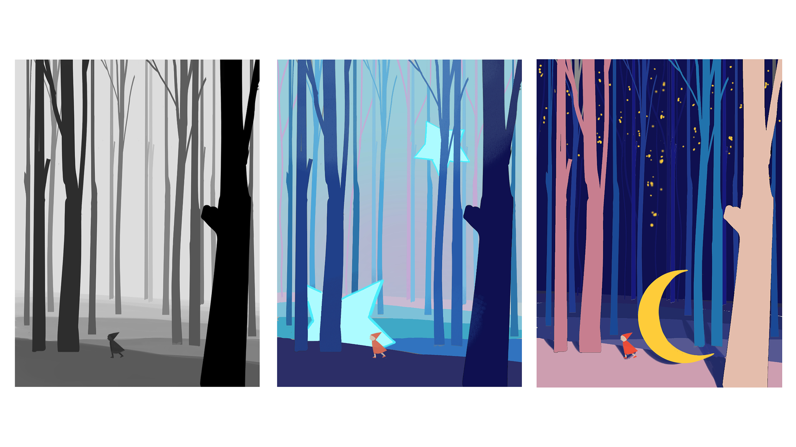
Thank you for watching ^^
I hope we’ll meet again soon.
Have a wonderful day!
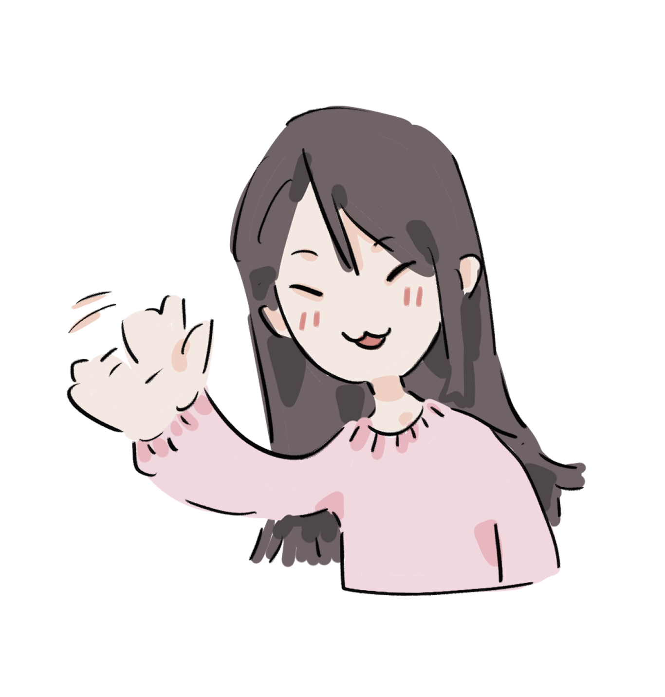